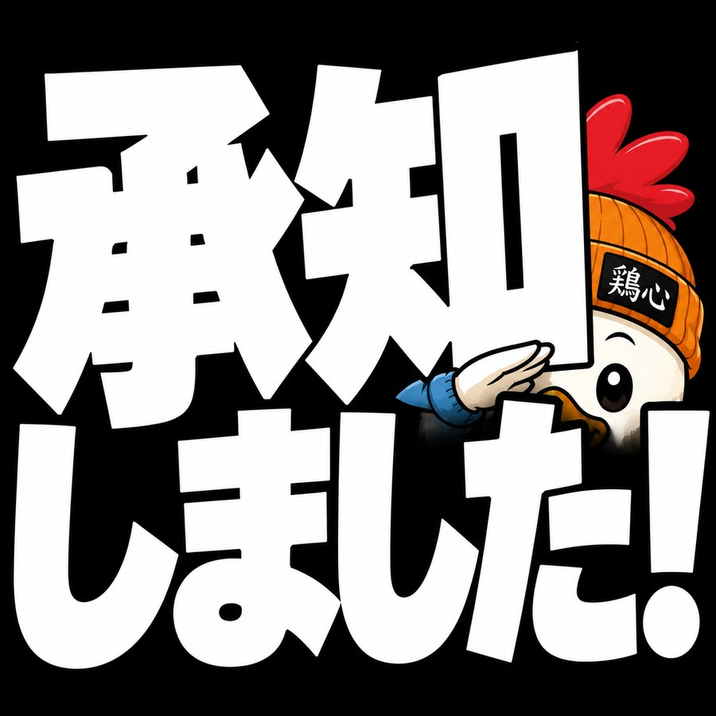
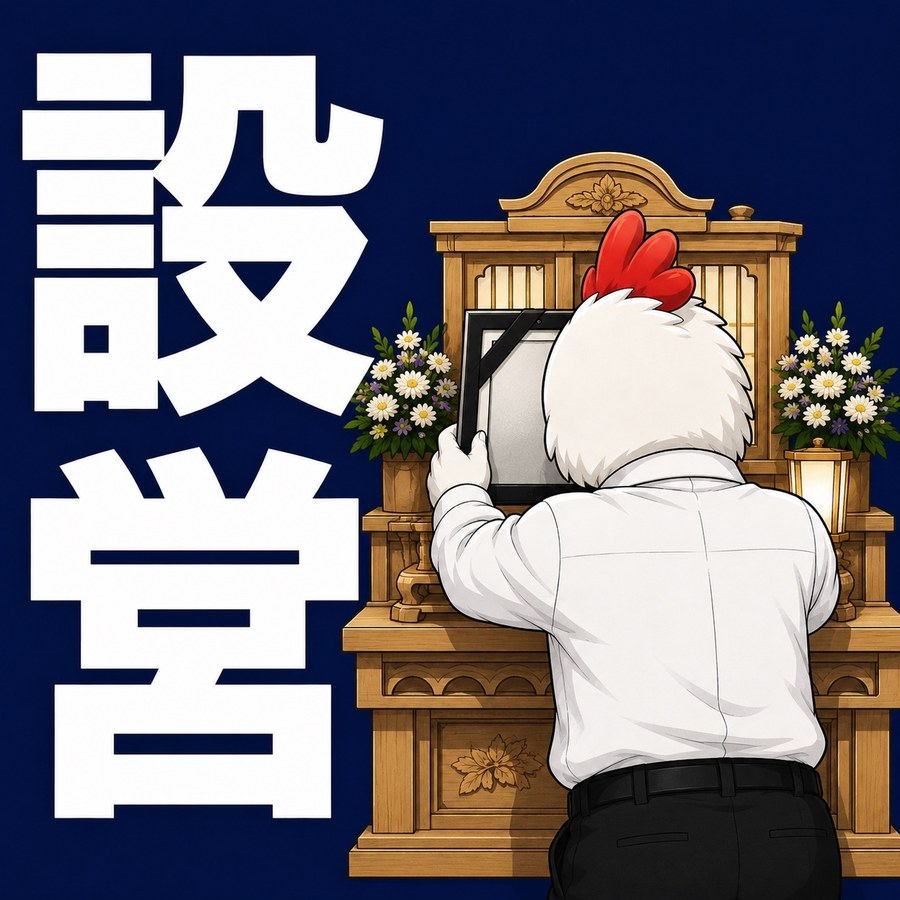
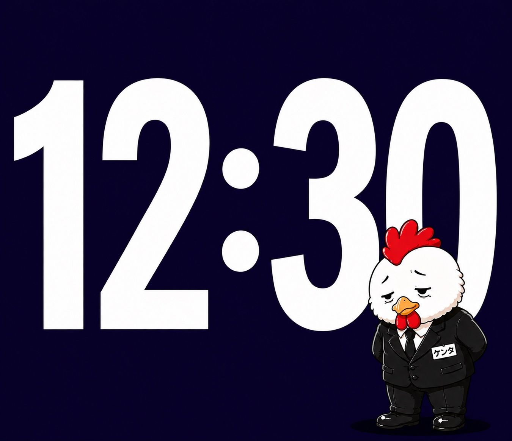

ROOM 01
LINEスタンプ研究室
一般向け・シニア向け・介護・葬儀・駆除・産廃・生コン。ケンタのスタンプを用途ごとに整理する部屋。
EXHIBIT 01
介護・葬儀のお仕事スタンプ｜鶏野ケンタ
鶏野ケンタ、最初のアソート。
普段使い、シニア向け、介護、葬儀。
ターゲットを絞るという発想を知らなかった頃の、全部入りスタンプです。🐔


EXHIBIT 02
葬儀屋さん向けLINEスタンプ｜鶏野ケンタ
葬儀屋さんの仕事を、「業務」と「時間」の2つのパートで切り取ったスタンプ。
お迎え、司会打合せ、出棺、火葬などの業務パートと、現場の一日を追いかける時間パートで構成しています。
葬儀屋さんの一日を、ケンタと一緒に。🐔

この研究室は、これからも増築していきます。🐔